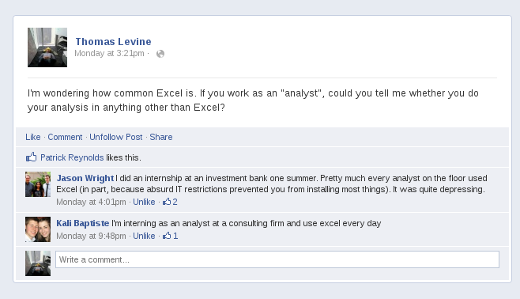

We were wondering how common spreadsheets are as a platform for data analysis. It’s not something I’ve really thought about in a while; I find it way easier to clean numbers with real programming languages. But we suspected that virtually everyone else used spreadsheets, and specifically Excel Spreadsheet, so we did a couple of things to check that.
Methods
First, I looked for job postings for “analyst” jobs. I specifically looked in companies that provide tools or analysis for social media stuff. For each posting, I marked whether the posting require knowledge of Excel. They all did. And not only did they require knowledge of Excel, they required “Excellent computer skills, especially with Excel”, “Advanced Excel skills a must”, and so on. I generally felt that Excel was presented as the most important skill for each particular job.
Second, I posted on Facebook to ask “analyst” friends whether they use anything other than Excel.

It seems that they don’t.
Conclusions
It seems that Excel is a lot more common than I’d realized. Moreover, it seems that “analyst” is basically synonmous with “person who uses Excel”.
Having investigated this and concluded that “analyst” is synonymous with “person who uses Excel”, I personally am going to stop saying that I “analyze” data because I don’t want people to think that I use Excel. But now I need another word that explains that I can do more advanced things.
Maybe that’s why people invented that nonsense role “data scientist”, which I apparently am. Actually, Dragon thought we should define “big data” as “data that you can’t analyze in Excel”.
For ScraperWiki as a whole, this analysis data science gives us an idea
of the technical expertise to expect of people with particular job roles.
We’ve recognized that the current platform expects that people are comfortable
programming, so we’re working on something simpler. We pondered making Excel
plugins for social media analysis functions, but now we think that that will
be far too complicated for the sort of people who could use them, so we’re
thinking about ways of making the interface even simpler without being overly
constrained.